Q1
How big is the problem?
93.21% of orders arrived on time, but the rate fell to 81.04% in March 2018. Feb-Mar 2018 had 14.09% of orders and 34.51% of all late orders: lateness comes in peaks.
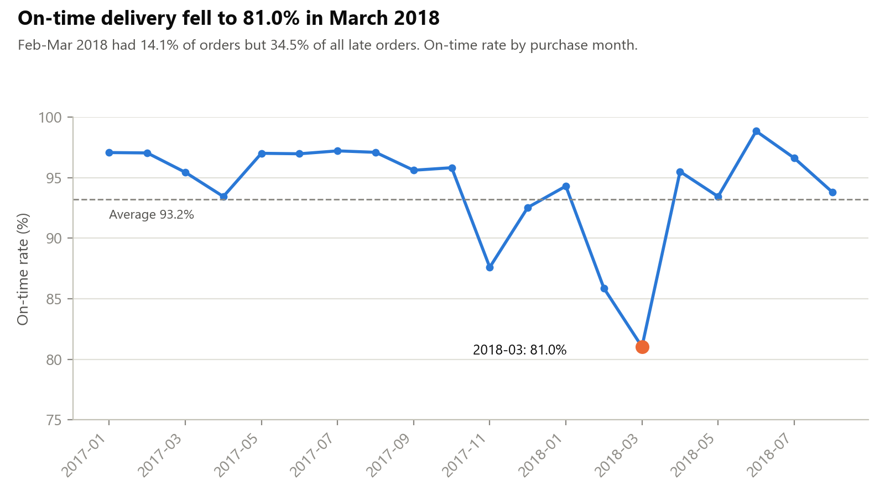
Late deliveries drive bad reviews. Using 96,203 delivered orders from Olist, a Brazilian marketplace, I found where the delays come from and what the business should fix first.
Orders purchased 2017-01 to 2018-08. Late = delivered after the date promised at checkout.
Where do delays come from, and what should the business fix first?
A bad review lowers the seller's rating and future sales, adds customer-service cost and makes the customer less likely to return. Late orders get a 1-2 star review 62.42% of the time.
Four parties touch every order: customer, platform, seller and carrier. Each controls a different part of the delay, so each needs its own measure and owner.
A BRD, AS-IS / TO-BE process maps, 15 SQL analyses, an impact estimate, 10 charts, an interactive dashboard and a 12-page case study.
One business question per chart. Click a chart to enlarge it.
93.21% of orders arrived on time, but the rate fell to 81.04% in March 2018. Feb-Mar 2018 had 14.09% of orders and 34.51% of all late orders: lateness comes in peaks.

Late orders average 2.27 stars vs 4.29 on time. Even 1-3 days late raises the 1-2 star share to 32.14%.
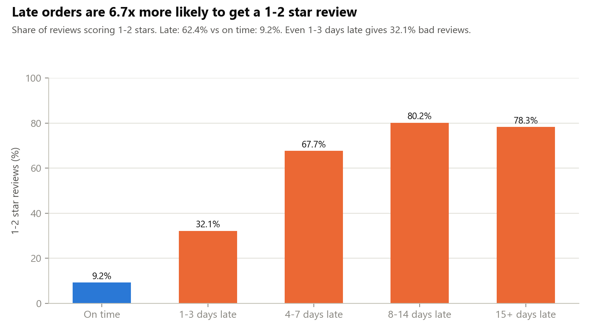
Late orders spend 19.88 extra days in carrier transit but only 2.93 extra days with the seller. 72.16% of late orders had a seller who handed over on time.
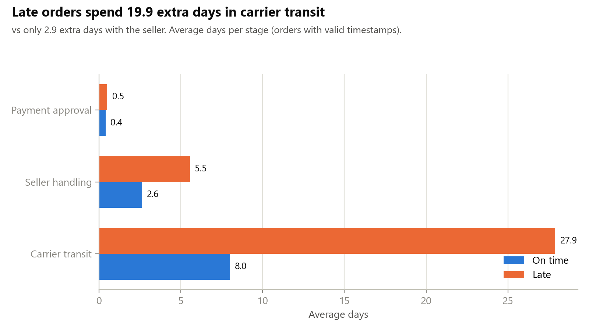
North-East states have the highest late rates (AL: 21.46%).
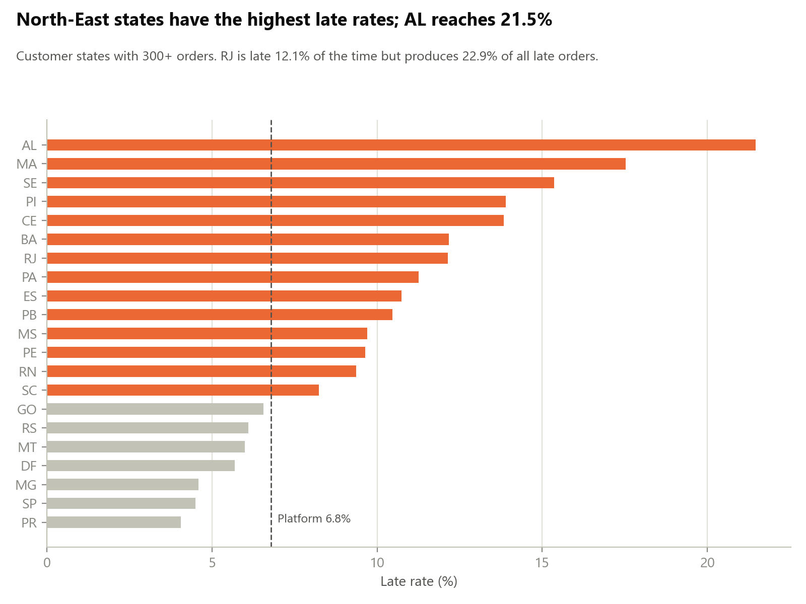
Sao Paulo to Rio de Janeiro alone produced 1,157 late orders (14.01% late).
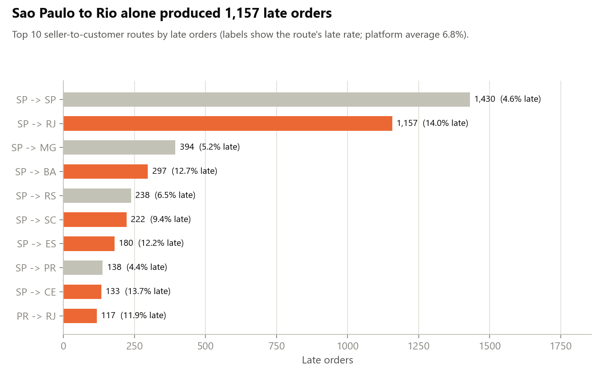
Missing the deadline raises the late rate from 5.32% to 20.98%.
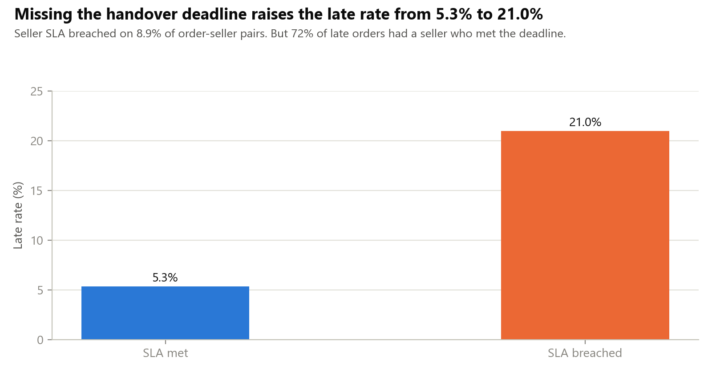
Ranking by raw late count only finds the biggest sellers (top 20% = 78.65% of volume). Ranked by excess late orders, 125 sellers create 1,061 more late orders than an average seller would.
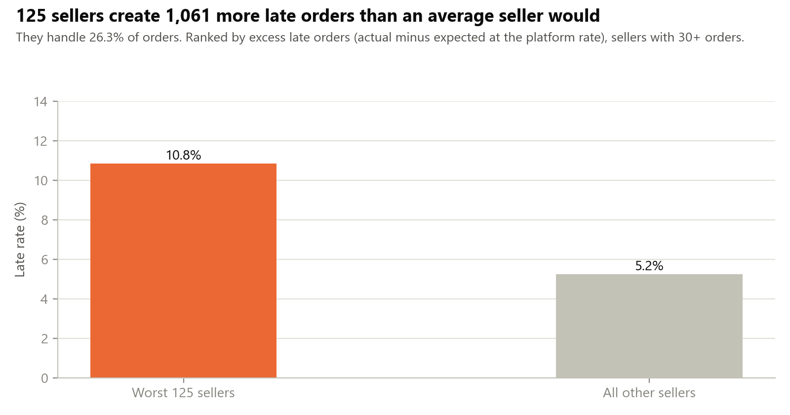
78.87% of orders arrive 7+ days early: the promise is padded for most customers.
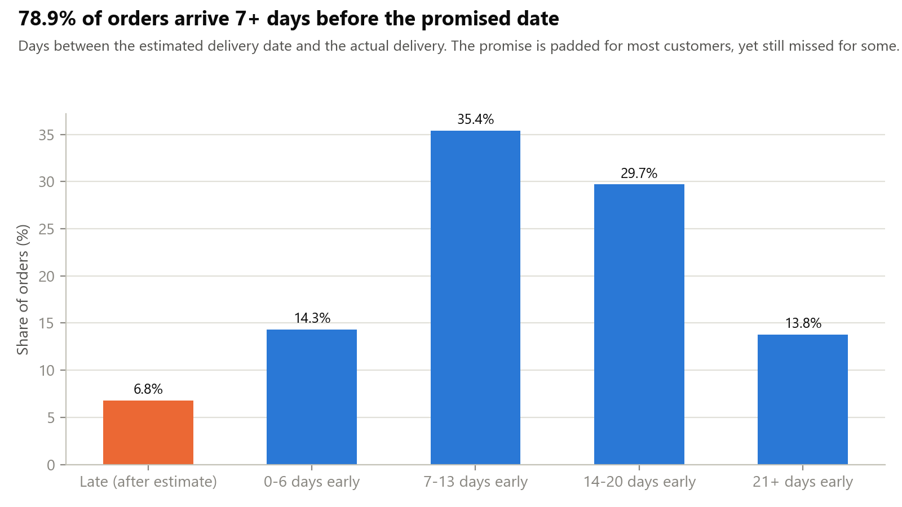
States with less buffer see more late orders (r = -0.71). AL gets 8.6 days of buffer and is late 21.46% of the time.
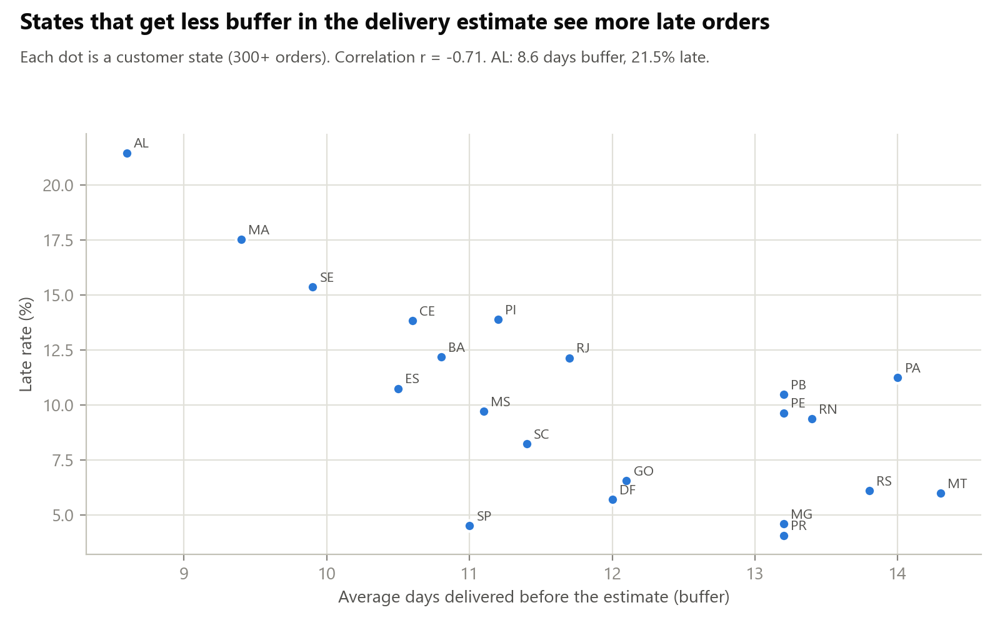
Bringing the worst 125 sellers and 5 worst routes to the platform average avoids 752-1,413 late orders and 391-734 1-2 star reviews over 20 months.
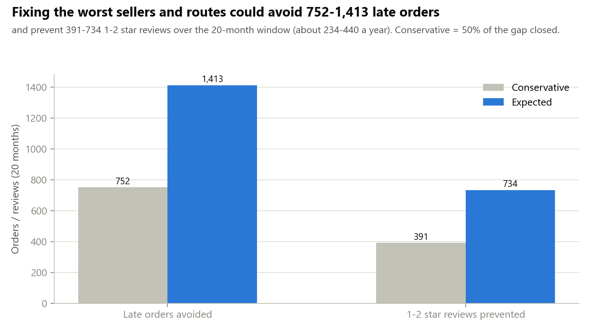
Ranked by impact and effort. Full roadmap (30/60/90 days) in the case study.
Order fulfilment across customer, platform, seller and carrier. Orange = pain point, blue = improvement.
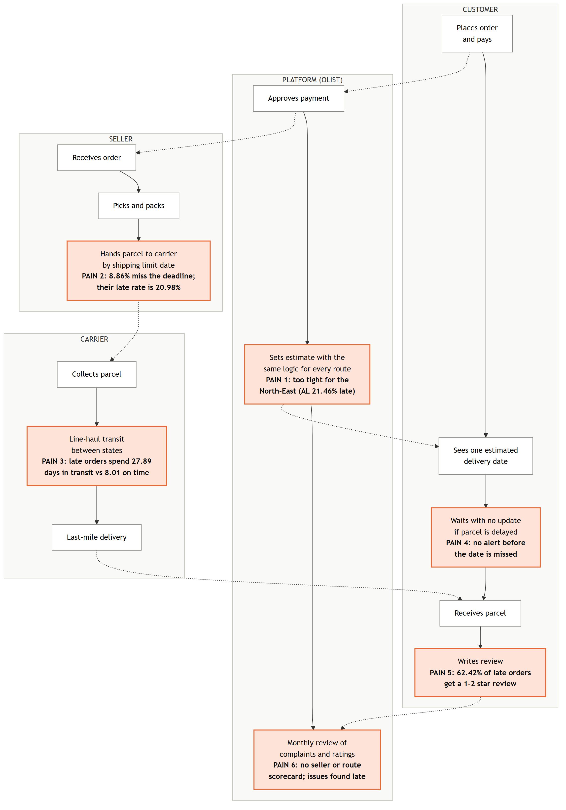
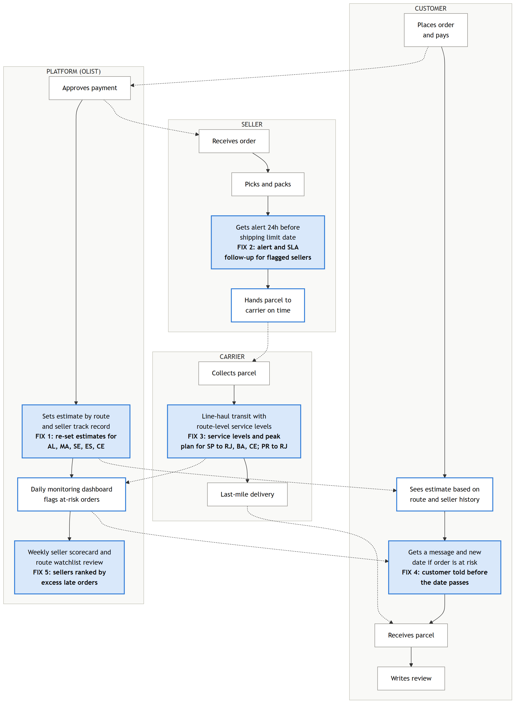
From business problem to measurable recommendation.
Everything opens in the browser.